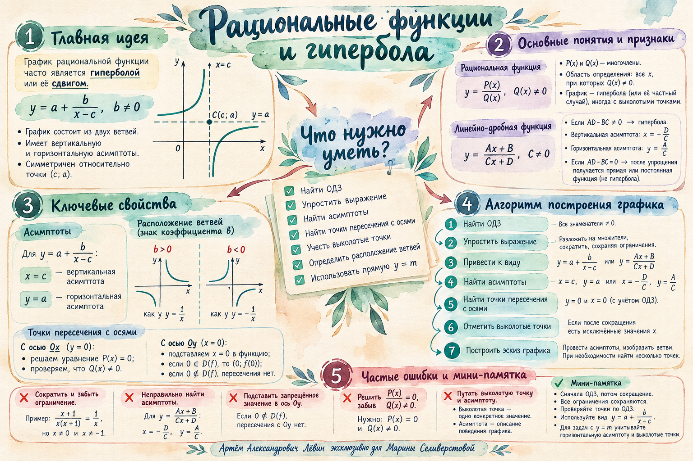

{kind=link}
1. y = (2x − 3)/(x + 1)
Укажите ОДЗ; найдите вертикальную и горизонтальную асимптоты; найдите точки пересечения с Ox и Oy; постройте эскиз графика.
Показать ответ
ОДЗ: x ≠ −1. Асимптоты: x = −1, y = 2. Точки: (3/2; 0) и (0; −3).
Занятие · 26 сентября 2026
ОДЗ, асимптоты, пересечения с осями, сокращение рациональной дроби, выколотые точки и исследование горизонтальной прямой y = m.
Удобный вид сразу показывает геометрию графика.
Лаборатория показывает асимптоты, центр и изменение положения ветвей.
Асимптоты можно получить непосредственно из коэффициентов.
Если AD − BC ≠ 0, график является гиперболой.
Этих данных достаточно для качественного эскиза. Если положение ветвей вызывает сомнение, допустимо взять одну-две дополнительные точки по обе стороны вертикальной асимптоты.
Область определения фиксируется по исходной формуле до сокращения.
Для каждой оси действует короткое и надёжное правило.
Если функция уже дана в виде y = a + b/(x − c), предварительно собирать её в одну большую дробь не требуется.
Отсутствующий уровень может появиться из-за асимптоты или из-за единственной выколотой точки.
На точном примере занятия видно, почему именно два уровня не дают общих точек.
Короткий контроль перед построением.
Наглядная памятка
Изображение и PDF уже лежат рядом с материалами занятия.

Тренировочный блок · Путь А
Укажите ОДЗ; найдите вертикальную и горизонтальную асимптоты; найдите точки пересечения с Ox и Oy; постройте эскиз графика.
ОДЗ: x ≠ −1. Асимптоты: x = −1, y = 2. Точки: (3/2; 0) и (0; −3).
Укажите ОДЗ; найдите обе асимптоты; найдите точки пересечения с координатными осями; определите положение ветвей относительно точки пересечения асимптот; постройте эскиз.
ОДЗ: x ≠ −3/2. Асимптоты: x = −3/2, y = −1. Точки: (−1; 0) и (0; −2/3). Ветви расположены как у y = 1/x относительно центра (−3/2; −1).
Укажите ОДЗ исходной функции; упростите выражение, сохранив ограничения; найдите асимптоты и пересечения с осями; отметьте выколотую точку; постройте график; найдите все m, при которых y = m не имеет с графиком ни одной общей точки.
ОДЗ: x ≠ 0, 2. После сокращения y = 1/x − 1, x ≠ 0, 2. Асимптоты: x = 0, y = −1. Ox: (1; 0); с Oy пересечения нет. Выколотая точка (2; −1/2). m ∈ {−1; −1/2}.
0 из 6 пунктов отмечено.